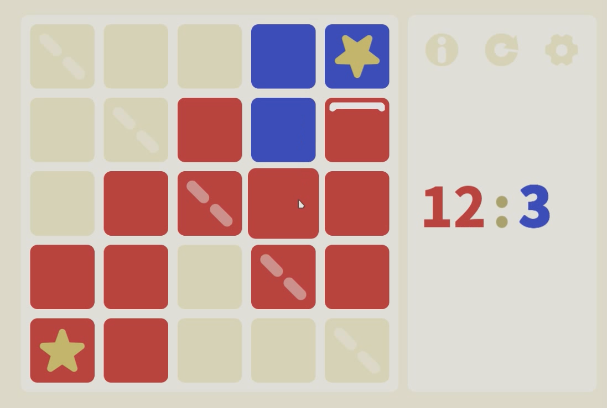

CCAC - Chinese Character Assembly Company
An educational Unity 2D game where players assemble jumbled Chinese character
radicals and components to form target characters and words in order to increase
enjoyment of learning Chinese and enhance understanding of character meanings.
Easy Monopoly
An EasyX-powered multiplayer Monopoly-style game built in C++.
Mr. Sole
This is a Fabric mod for the game Minecraft, which adds two new mobs: the Sole and
the Mole, as well as three vinyl records to the game, enhancing game enjoyment. The
project is open source on GitHub.
Jove: Online Dating Platform
A web application developed using Java EE technologies (SpringMVC, Spring and
MyBatis) that allows users to register, login, search and filter potential dating
matches based on their criteria.

UniLand Game
A tactical 2D Unity game where players represent either the Red king or Blue king on
a 5x5 grid. Players take turns placing pieces and building walls to prevent the
opponent from capturing their castle and winning the round.
Zhiyan: Dialect Speech Recognition System
I created visual designs and interactive prototypes for the mobile app pages using
tools like Figma and Adobe Illustrator, ensuring an intuitive and easy-to-use
interface and creating a visually pleasing and aesthetically consistent experience.